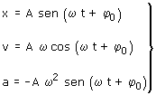

| Ecuaciones del movimiento
armónico

| x |
Elongación: Posición del móvil en cada
instante (Variable) |
A |
Amplitud: Máximo módulo de la elongación
(Parámetro) |
| v |
Velocidad del móvil en cada instante (Variable)
|
| a |
Aceleración del móvil en cada instante
(Variable) |
| t |
Tiempo (Variable)
Cuenta desde 0 hacia adelante. No puede ser negativo |
| ωt +φ0 |
Fase temporal (Variable)
Es una magnitud matemática que determina la situación
del móvil en cada instante (Posición, velocidad
y aceleración)
Esta fase crece con el tiempo y cada vez que aumente en 2π se
repetirá la situación de partida (Se ha hecho una
oscilación) |
| φ0 |
Fase inicial (Parámetro)
Determina la situación del móvil en el instante inicial
(t = 0) |
| ω |
Pulsación | Frecuencia angular (Parámetro)
No es una magnitud perceptible directamente pero está relacionada
con otras dos magnitudes más intuitivas:
| T |
Período: Tiempo que se tarda en hacer
una oscilación (Y por tanto, repetir situación:
misma posición y velocidad)
ω = 2π/T |
| f |
Frecuencia: Oscilaciones que se hacen por unidad de tiempo
ω = 2πf |
|
Signos
No se pone signo a las variables x, a, v pues estas lo llevan incluido.
Cuando x, a, v sean incógnitas, al despejarlas se obtendrá
el valor con su signo y cuando sean datos habrá que sustituir la
variable por el valor con su signo
Los parámetros A, ω no tienen signo. En algunos casos las
fase inicial puede ser negativa en cuyo caso habrá que anteponerle
el signo
Aviso
La ecuación de posición del movimiento armónico
puede aparecer en función del coseno de la fase temporal. |